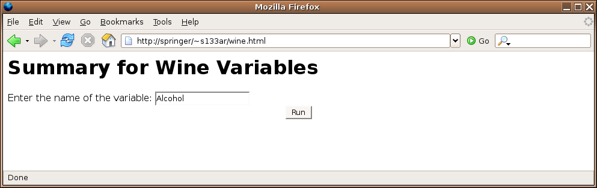
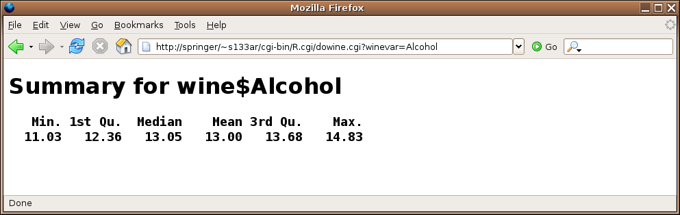
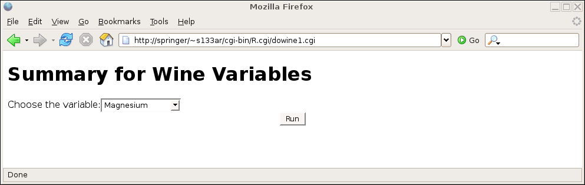
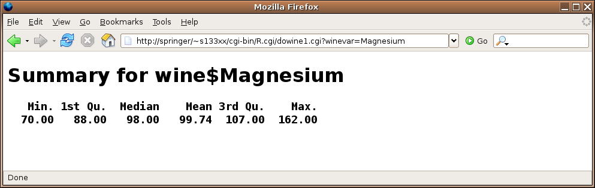

CGI Programming
1 Data
The R.cgi script calls your R program in such a way that it doesn't
automatically load any data into the R environment. So if you want to have
data available to your CGI program, you'll need to explicitly get the data
into R's environment.
For reasons of efficiency, your program should always use the load
function to load a previously saved binary version of the data you need.
The most convenient place to store these objects is right in the cgi-bin
directory from which your program will execute.
Suppose we wish to create a CGI program that will accept the name of one of the
variables from the wine data frame, and then display a summary of the
data. Before you plan to run the script, the wine data should be
saved in a simple R session that's started after you've changed your working
directory to be your cgi-bin directory. The command to do this is
save(wine,file='wine.rda')
Next, we can create a form, which would be saved in the public_html
directory. Here's a simple example, which we'll save in the file
wine.html:
<html><body>
<h1>Summary for Wine Variables</h1>
<form action='cgi-bin/R.cgi/dowine.cgi'>
Enter the name of the variable:
<input type=text name=winevar><br>
<center>
<input type=submit value='Run'>
</center>
</form>
</body></html>
The dowine.cgi program would look like this:
load('wine.rda')
HTMLheader()
winevar = formData$winevar
tag(h1)
cat('Summary for wine$',winevar,sep='')
untag(h1)
tag(h2)
tag(pre)
print(summary(wine[[winevar]]))
untag(pre)
untag(h2)
cat('</body></html>')
Here's the form:

Here's the result of submitting the form:

2 Combo Forms
Of course, having the user remember the name of the variable they're interested
in isn't a very user-friendly strategy, but the thought of manually preparing
a form that lists all the variables isn't very appealing either. The problem
can be solved by having the CGI program generate the form the first time it's
called, and then processing the form when it's submitted back to the web
server. If we call the CGI program directly (not through a form submission),
the formData list will be empty, and we can use that condition to
tell whether we need to generate the form or respond to it. Since R will be
generating the form, it's very easy to have it provide a choice for each variable.
For this example, let's use a drop down menu that will display the names of
each variable. Here's a program that will both generate the form and respond
to it:
if(length(formData) == 0){
HTMLheader()
tag(h1)
cat('Summary for Wine Variables')
untag(h1)
cat("<form action='dowine1.cgi'>")
cat("Choose the variable:")
cat("<select name='winevar'>")
load("wine.rda")
sapply(names(wine),function(x)cat("<option value='",x,"'>",x,"<br>\n",sep=''))
cat("</select>")
cat('<input type="submit" value="Run">')
cat("</form></body></html>")
} else {
load('wine.rda')
HTMLheader()
winevar = formData$winevar
tag(h1)
cat('Summary for wine$',winevar,sep='')
untag(h1)
tag(h2)
tag(pre)
print(summary(wine[[winevar]]))
untag(pre)
untag(h2)
untag(h2)
cat('</body></html>')
}
One very important thing to notice if you use this approach - the
action= argument should specify only the name of the program,
without the usual R.cgi/; since R is already calling your program,
it thinks it's in the R.cgi "directory".
Here's the result of calling the program directly:

and here's the result after making a choice:

3 Graphs
Certainly one of the most useful functions of CGI scripting with R
is to display graphics generated by R, based on a user's choices as
specified on a web form. This would provide a simple way to allow
people unfamiliar with R to produce attractive graphs; if a means
is provided for data input, and enough options are provided through
checkboxes, drop-down menus, radiobuttons, etc, a complete web-based
graphing solution could be developed.
To properly create and display graphics with a CGI program, it's
necessary to understand the difference between the internal paths
(which your R program will see) and the external paths (which are the
addresses typed into the browser's address field.) For example,
the way the class webserver is configured, the directory into which you
would put HTML pages is (once again assuming your SCF id is s133xx):
/class/u/s133/s133xx/public_html/
This directory provides a convenient place to place graphics generated
by your scripts. To the outside world, this directory would be indicated
as:
http://springer/~s133xx/
or
http://localhost:8080/~s133xx/
So as far as the webserver is concerned (i.e. the way the outside world
would find your files through a URL), the directory is known as
/~s133xx/
To create graphics from your CGI script, you first create a variable
called graphDir and set it equal to the full internal name
of the directory into which you'll write your graphs. In our example
it would be /class/u/s133/s133xx/public_html/.
Then use the webPNG function, specifying the name (without any
leading directories) that you want to use for your graph.
In order to
generate the appropriate HTML so that your image will be displayed, you
can use the img function of the CGIwithR library. This
function takes two arguments. The first is the name of the graphic you produced
via webPNG, and the second is called graphURLroot, and should
be set to the "outside" view of your public_html directory,
namely /~s133xx/. (Note the trailing slashes in both the
graphDir and graphURLroot; they are required.)
To illustrate, let's create a simple CGI program that will generate some
random data and create a conditioning plot containing histograms.
library(lattice)
HTMLheader()
x = data.frame(z = rnorm(1000), g = factor(sample(1:5,size=1000,replace=TRUE)))
graphDir='/class/u/s133/s133xx/public_html/'
cat("Now I'm going to plot some histograms:<br>")
webPNG(file='hist.png')
histogram(~z|g,data=x)
invisible(dev.off())
img(src='hist.png',graphURLroot='/~s133xx/')
cat("</body></html>")
The size of the plot can be controlled by passing width= and
height= arguments to webPNG; the units for these
arguments are pixels.
If you are using lattice graphics and your plot does not appear,
try passing the call to the lattice function to the print function.
Notice the call to dev.off; without it, your graph may not be
properly terminated, and only some (or possibly none) of the graph will
be displayed.
4 Hidden Variables
Suppose we have a web page that displays a choice of data frames for possible
further analysis. Once a data frame is chosen, another page could display
the variables that are available from that data frame, and a choice of plots
could be provided. Remember that each time our CGI program is called, a new
R process begins. So how can we "remember" the data set name in between
invocations of our program? The answer is to use hidden variables. Any time
you create an HTML form, you can create as many hidden variables as you need
to store information that needs to be available in the next step of processing.
These hidden variables are exactly like any other CGI variable, but there is
no visible sign of the variable on the form that is displayed in the user's
browser. To create a hidden variable, use code like the following:
<input type="hidden" name="varname" value="the value">
Here's an implementation of a program that looks in the current directory
for any files with an extension of .rda, provides a drop down
menu of data set
names,
then allows a choice of variables, and finally produces the requested plot:
HTMLheader()
if(length(formData) == 0){
datasources = list.files('.',pattern='\\.rda$')
datasources = sub('\\.rda$','',datasources)
cat('<form action="doplot.cgi">')
cat('<select name=dataset>\n')
sapply(datasources,function(x)cat('<option value="',x,'">',x,'</option>\n'))
cat('</select>\n')
cat('<center><button type="submit">Run</button></center></form>')
} else if('dataset' %in% names(formData)){
dataset = formData$dataset
dataset = gsub(' ','',dataset)
load(paste(dataset,'.rda',sep=''))
cat('<form action="doplot.cgi">\n')
cat('<p>X-variable:<br>\n')
sapply(names(get(dataset)),function(i)cat('<input type="radio" name="xvar" value="',i,'">',i,'<br>\n'))
cat('<p>Y-variable:<br>\n')
sapply(names(get(dataset)),function(i)cat('<input type="radio" name="yvar" value="',i,'">',i ,'<br>\n'))
cat('<input type="hidden" name="set" value="',dataset,'">\n')
cat('<center><button type="submit">Run</button></center></form>')
cat('</form>')
} else{
dataset = gsub(' ','',formData$set)
load(paste(dataset,'.rda',sep=''))
xvar=gsub(' ','',formData$xvar)
yvar=gsub(' ','',formData$yvar)
graphDir = '/home/spector/public_html/'
webPNG(file='theplot.png',graphDir=graphDir)
thedata = get(dataset)
plot(thedata[[xvar]],thedata[[yvar]],xlab=xvar,ylab=yvar)
img(src='theplot.png',graphURLroot='/~spector/')
invisible(dev.off())
}
cat('</body></html>')
This program has three sections: the first displays the initial form
showing the data frame names (invoked when no formData is available);
the second displays the variable choices (invoked when a dataframe
variable is specified), and the third, which is invoked when formData
is available, but the dataset variable is not defined.
5 Outgoing HTTP Headers
We've already seen that when a web browser makes a request to a web server,
it sends a series of headers before the actual content (if any). The web
server also sends headers to the browser, but up until now we've let the
R.cgi wrapper script take care of that detail for us. In most
cases, the only header that needs to be sent to a browser is one that informs
the browser that we're sending it HTML (as opposed to, say an image or other
binary file). That header looks like this:
Content-type: text/html
and it would be followed by a completely blank line to signal the end of the
headers. The R.cgi script examines what you're about to send to
the web browser, and, if it doesn't find the "Content-type" line, it inserts
it before it sends your output to the browser. Thus, if you do insert that
line, you are taking responsibility for the outgoing headers, and, if desired,
you can add additional ones.
Just about the only header line that you might consider adding is one that
specifies the value of a cookie to the browser. Cookies are small pieces of
text, associated with a particular website, that are stored by a browser, and
sent to web servers if they match the domain and possibly the path of the URL
that initially set them.
There are two types of cookies: session cookies, which expire when a particular
browser session is ended and the browser is shut down, and persistent cookies,
that are stored in a text file on the computer on which the browser is running,
and will expire at a date specified in the header that defined the cookie. For
this example, we'll create a session cookie, and then access it through a
different script.
If every web transaction had a form associated with
it, we could use hidden CGI variables to do much of the work that cookies
do, but, since they're stored on the user's computer, they
are more reliable, and don't require any special programming.
Here's an example of a script that sets a cookie:
if(length(formData) == 0){
HTMLheader()
cat("What is your name?")
cat('<form action="setcookie.cgi">\n')
cat('<input type="entry" name="name"><br>\n')
cat('<button type="submit">Run</button>\n')
} else if('name' %in% names(formData)){
name = formData$name
cat("Content-type: text/html\nSet-Cookie: thename=",name,"; path=/~s133xx/\n\n",sep='')
cat("Hello there, ",name)
}
cat('</body></html>')
Since everyone in class is sharing the same webserver, I've added a path=
specification to the cookie header. For this class, it probably is a good idea
to prevent people from getting cookies set by other programs. Note the two
newlines at the end of the header line - these are essentially to make sure that
the browser understands that the headers are done and the content is following.
If you want to create persistent headers, you need to add an expires=
specification to the Set-cookie header. The format of the expiration time
must be followed precisely; in particular, the parts of the date much be separated
by dashes, and the only allowable time zone is GMT. Here's an example
of a header containing a variable, path and expiration date:
Set-Cookie: thename=Somebody; path=/~s133xx/; expires=Monday, 09-May-10 00:00:00 GMT
Now let's look at a program that will retrieve an already set cookie. When a
browser recognizes a domain/path/time combination for which it has an
active cookie, it sends it back to the webserver in a Cookie: header,
not as a CGI variable.
The format of the cookie is name=value, similar to the format in
which CGI variables are transmitted.
This means that we'll need to
use Sys.getenv to
access the environmental variable called HTTP_COOKIE.
HTMLheader()
cookie = Sys.getenv('HTTP_COOKIE')
name = gsub('^ *thename=(.*)$','\\1',cookie)
cat('Welcome back, ',name)
cat('</body></html>')
Notice that you can only access the cookies in a CGI program, not in ordinary
HTML, but you don't need any form elements to get the cookie.
6 Creating Pretty Output
Since the output created by CGI programs is interpreted by the browser as HTML,
we can use any HTML commands by simply having our program generate the necessary
HTML statements. One simple way of organizing output in HTML is the HTML table.
A table begins with the string <table>, and ends with </table>.
Each row of the table begins with <tr>, and ends with </tr>;
each element within a row begins with <td> and ends with </td>.
To specify headings, the th tag can be used in place of td.
This suggests the following function to produce one row of an HTML table:
makerow = function(x,tag='td'){
st = paste('<',tag,'>',sep='')
end= paste('</',tag,'>',sep='')
cat(paste(paste('<tr>',st,sep=''),
paste(x,collapse=paste(end,st,sep='')),
paste(end,'</tr>',sep='')),"\n")
}
To print an entire data frame, we can first print the names as a header line,
then use apply to print the body of the data frame:
dftable = function(df){
cat('<table border=1>')
makerow(names(df),tag='th')
apply(df,1,makerow)
cat('</table>')
}
An example of using these functions will be presented in the next section.
7 File Upload
We've already seen that that an input element with type=file will
create an entry field and browse button to allow a user to specify a file for upload.
In the following program, we'll create such a field to allow a user to specify a
local comma-separated file which will then be read into R, and displayed as a table.
File upload using the CGIwithR library simply places the content of the uploaded
file into a character string in the formData list corresponding to the
name of the CGI variable specified in the HTML form. To treat this character string
as a file, we can use the textConnection function.
The following program will upload a comma-separated
file, which will then be read by read.csv, and displayed using the
dftable function from the previous section:
HTMLheader()
if(length(formData) == 0){
cat('<form action="readcsv.cgi" method=post enctype="multipart/form-data">\n')
cat('<input type=file name=thefile><br>')
cat('<input type=submit value="Upload">')
cat('</form>')
} else{
makerow = function(x,tag='td'){
st = paste('<',tag,'>',sep='')
end= paste('</',tag,'>',sep='')
cat(paste(paste('<tr>',st,sep=''),
paste(x,collapse=paste(end,st,sep='')),
paste(end,'</tr>',sep='')),"\n")
}
dftable = function(df){
cat('<table border=1>')
makerow(names(df),tag='th')
apply(df,1,makerow)
cat('</table>')
}
txtcon = textConnection(formData$thefile)
df = read.csv(txtcon)
dftable(df)
}
cat('</body></html>')
8 Debugging CGI Programs
The first step in debugging an R program is to make sure that there are no
obvious syntax errors. This can be done easily by changing directories to
the location of your CGI programs, running R and using the source
command to execute your program. If you see any syntax errors, they should
be corrected before attempting to run your program through the web server.
You can simulate input from a form by creating a list called formData
and loading appropriate elements into named values in that list.
When a program is run as a CGI program through a webserver, the program's standard
error, which contains error messages, is normally routed to the webserver's error
logs. Unless you are the owner of the webserver, these logs are usually not
readable. To redirect error messages to your browser (which represents the
standard output stream of a CGI program), you can use the following
command inside your CGI program:
sink(file=stdout(),type='message')
Remember that the error messages will not be displayed using HTML, so they may be
difficult to read.
If simulating your web data through an artificially constructed formData
list is not sufficient to resolve problems in getting your program to run properly
through the webserver, you can have a form generate the formData list, and save it
to a file; then when you are testing the program offline, you can load that copy of
formData, giving you an interactive session with the same data as would be
generated by the web page.
File translated from
TEX
by
TTH,
version 3.67.
On 15 Apr 2011, 16:35.